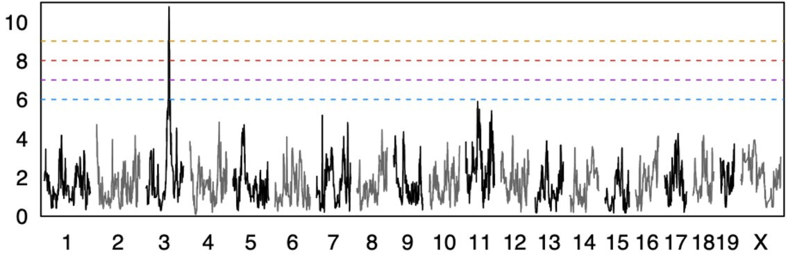
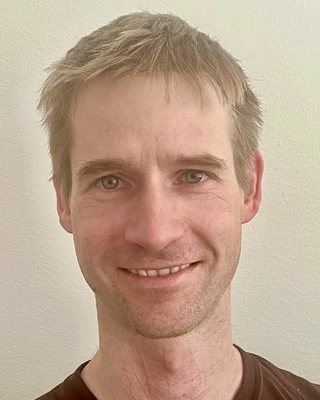
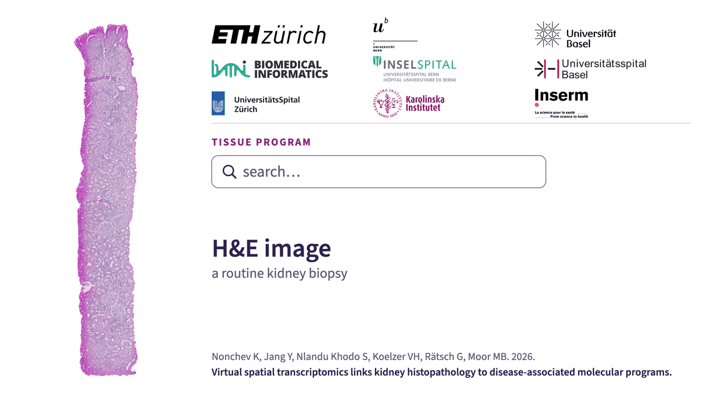

Experimental Nephrology, Department for BioMedical Research, University of Bern, and Department of Nephrology, University Hospital Bern
Why does kidney disease make someone’s bones fragile and calcify another person’s blood vessels? We study the bone and mineral disorders of chronic kidney disease, and the genes that contribute to the heterogeneity of disease manifestation.


Physician-scientist and nephrologist. SNSF Ambizione research group leader and attending physician at the Department of Nephrology, University Hospital Bern, starting in 2026. He runs a specialized clinic and bone biopsy program for kidney-related bone disease.
Medical degree from the University of Bern (2012), MD-PhD from the University of Lausanne (2016), Privatdozent in experimental nephrology at Bern (2022). Visiting scientist at Karolinska Institutet, Stockholm, 2022-2024, in the Patrakka/Olauson lab.
Nov 2026 New preprint with the Koelzer and Rätsch groups: virtual spatial transcriptomics links kidney histopathology to disease-associated molecular programs. medRxiv

Nov 2026 New preprint: single-nucleus analysis reveals renal STAT1/CEBPB signaling as a modifiable relay of proinflammatory FGF23 effects in diabetic kidney disease. bioRxiv
Oct 2026 We have a lab website!
Jun 2026 New preprint: precision-cut kidney slices from the BXD founder strains show that nephrotoxicity can be modelled ex vivo for population genetics. bioRxiv
Feb 2026 Published in J Cell Commun Signal: in kidney disease, the renal response to FGF23 shifts from phosphaturia toward inflammation. Read the paper
Jan 2026 The lab starts at the Department for BioMedical Research, University of Bern, funded by an SNSF Ambizione fellowship.
Oct 2025 New preprint with Greg Keele: mapping the genetics of tissue cell composition in genetically diverse mice. bioRxiv
We study renal osteodystrophy, the abnormalities of bone in chronic kidney disease, and how bone secretes the phosphate-regulating hormone FGF23 and how the kidney responds to it.
Chronic kidney disease-associated osteoporosis comes in several forms with variable bone turnover or defects of mineralization, often accompanied by vascular calcification. These forms may look similar from the outside, sometimes need a bone biopsy for diagnosis, and respond in opposite ways to the same osteoporosis drug. We want to understand why, improve the treatment options, and learn how precisely bone cells sense and handle minerals.
Clinical cohorts, precision-cut kidney slices, ex vivo bone assays, transgenic and genetically diverse mouse models, population genetics, bulk and single-nucleus RNA sequencing, and molecular and cell biology. The aim is to find new diagnostic and therapeutic targets for some of the most serious complications of chronic kidney disease.